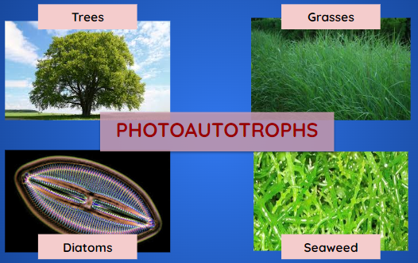

Photosynthesis-an Introduction
Callout
Photosynthesis is defined as the process that exclusively takes place in the chloroplasts through photosynthetic pigments such as chlorophyll a, chlorophyll b, carotene, and xanthophyll. All green plants and a few other autotrophic organisms utilize photosynthesis to synthesize nutrients by using carbon dioxide, water, and sunlight. The by-product of the photosynthesis process is oxygen.
Photosynthetic organisms make their own food using energy derived from the Sun. Photoautotrophs are the primary producers on Earth, converting light energy into chemical energy and using it to assemble complex organic molecules from simple inorganic raw materials
IMPORTANCE OF PHOTOSYNTHESIS
Photosynthesis and Sun Energy:
-
Harnesses the sun's energy into utilizable forms of energy on Earth.
-
A process that most biological organisms are unable to perform.
-
ATP is used to power these processes.
-
Converts light energy into chemical energy in the form of glucose.
-
Then the process of cellular respiration converts energy in glucose to energy in the form of ATP which is used to power biological processes.
Callout
4.png)
Photosynthesis and Carbon Dioxide Removal:
-
Converts carbon dioxide into oxygen.
-
During photosynthesis, carbon dioxide leaves the atmosphere enters the plant, and leaves as oxygen.
-
A process that is ecologically and environmentally important in nature.
Photosynthesis and the Ecosystem:
-
The energy produced by photosynthesis forms the basis of virtually all terrestrial and aquatic food chains.
-
As a result, photosynthesis is the ultimate source of carbon in the organic molecules found in most organisms.
-
The high oxygen concentration in the atmosphere is derived directly from the light reactions of photosynthesis.
-
Prior to the evolution of photosynthesis on Earth, the atmosphere was anoxic.
Photosynthesis and side products:
-
Solar energy, transformed by photosynthesis, is the source of countless vegetable, animal, and organic side products. Wood is a very important material used as fuel and in many fields including construction.
-
Paper, cotton, and other natural fibers consist of cellulose produced almost entirely by photosynthesizing plants.
-
Wool depends on the energy sheep obtain from grass and photosynthesis.
-
PHOTOSYNTHETIC ORGANISMS
Photosynthesis happens with the help of photosynthetic organisms such as Phototrophs and Chemotrophs.
PHOTOTROPHS
Phototrophs capture light energy from the sun using light-absorbing pigments and then transform this light energy into chemical energy, storing energy in the form of ATP.
Photoautotrophs use solar energy to produce all their necessary carbon compounds from CO2 during photosynthesis. Examples of photoautotrophs include:
-
Green Plants
-
Green Algae
-
Cyanobacteria
-
Photosynthetic bacteria

Photoheterotrophs harvest solar energy to power cellular activities, but they must rely on the intake of organic molecules for their carbon needs. Examples are:
-
Green Nonsulfur Bacteria
-
Purple Nonsulfur Bacteria
CHEMOTROPHS
Timeline
-
Chemotrophs
are a class of organisms that obtain their energy through the oxidation of inorganic molecules, such as iron and magnesium. The most common type of chemotrophic organisms is prokaryotic and include both bacteria and fungi. All of these organisms require carbon to survive and reproduce.
-
Chemoautotrophs
are able to synthesize their own organic molecules from the fixation of carbon dioxide. These organisms are able to produce their own source of food, or energy. These include nitrogen fixing bacteria located in the soil, iron oxidizing bacteria located in the lava beds, and sulfur oxidizing bacteria located in deep sea thermal vents.
-
Chemoheterotrophs
are unable to utilize carbon dioxide to form their own organic compounds. Their carbon source is rather derived from sulfur, carbohydrates, lipids, and proteins. Examples include animals, most fungi, protozoa and bacteria.
3.png)
Chemical Equation of Photosynthesis
3.png)
Word Equation of Photosynthesis
2.png)
1.png)
Photosynthesis takes place in two sequential stages: the light-dependent reactions and the light-independent reactions.
Callout
-
In light-dependent reactions, energy from sunlight is absorbed by pigment molecules in photosynthetic membranes and converted into stored chemical energy.
-
In the light-independent reactions, the chemical energy produced by the light-dependent reactions is used to drive the assembly of sugar molecules using CO2; however, these reactions are still light-dependent because the products of the light-dependent reactions necessary for driving them are short-lived.
-
The light-dependent reactions produce ATP and either NADPH or NADH to temporarily store energy. These energy carriers are used in the light-independent reactions to drive the energetically unfavorable process of “fixing” inorganic CO2 in an organic form, sugar.
CHLOROPLAST: Photosynthesis Machine
-
Photosynthesis occurs in chloroplasts, organelles in certain plants.
-
All green plant parts have chloroplasts and carry out photosynthesis.
-
The leaves have the most chloroplasts.
-
The green color comes from chlorophyll in the chloroplasts.
-
The pigments absorb light energy.
Callout
Sites of Photosynthesis
A chloroplast contains:
-
stroma, a fluid
-
grana, stacks of thylakoids
The thylakoids contain chlorophyll.
-
Chlorophyll is the green pigment that captures light for photosynthesis
.png)
WHY ARE PLANTS GREEN?
.png)
.png)
.png)
.png)
Callout
Pigments absorb light used in Photosynthesis
-
Photosynthetic organisms contain light-absorbing molecules called pigments that absorb only specific wavelengths of visible light while reflecting others.
-
The two important pigments in plants are Chlorophyll and Carotenoids.
-
There are five main types of chlorophylls: chlorophylls a, b, c, and d, plus a related molecule found in prokaryotes called bacteriochlorophyll.
-
In plants, chlorophyll a and chlorophyll b are the main photosynthetic pigments. Chlorophyll molecules absorb blue and red wavelengths.
-
Carotenoids are another key group of pigments that absorb violet and blue-green light. The brightly colored carotenoids found in fruit—such as the red of tomato (lycopene), the yellow of corn seeds (zeaxanthin), or the orange of an orange peel (β-carotene)—are often used as advertisements to attract animals, which can help disperse the plant's seeds.
In photosynthesis, carotenoids help capture light. When a leaf is exposed to the sun, it receives a huge amount of energy; if that energy is not handled properly, it can damage the photosynthetic machinery. Carotenoids in chloroplasts help absorb the excess energy and dissipate it as heat.
-
Callout
The set of wavelengths absorbed by a pigment is its absorption spectrum.
-
In this diagram, you can see the absorption spectra of three key pigments in photosynthesis: chlorophyll a, chlorophyll b, and β-carotene.
-
For instance, plants appear green to us because they contain many chlorophyll a and b molecules, which reflect green light.
.png)
Pigments, including chlorophylls and carotenoids, are organized into two types of photosystems: photosystem I and photosystem II. Each photosystem constitutes two main parts, a reaction centre surrounded by an antenna complex that helps capture photons of light energy and energize electrons.
Reaction Center VS An
REACTION CENTER
-
It has one or more molecules of chlorophyll a along with primary electron acceptor and associated electron carriers of the electron transport system. It receives the absorbed sunlight energy from the antenna complex and converts that energy into chemical energy.
ANTENNA COMPLEX
-
It is a light-harvesting complex containing proteins and many molecules of chlorophyll a, chlorophyll b, and carotenoids. Photons of light are first absorbed by antenna complex pigments which then transfer the energy to the reaction center.
Tenna Complex